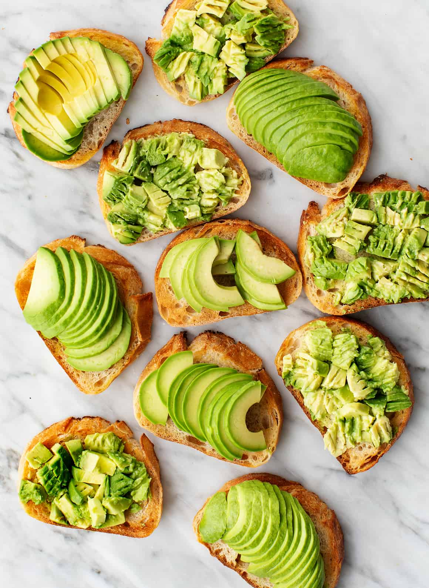

10-Minute Avocado Toast
This 10-Minute Avocado Toast is the ultimate quick and easy breakfast or snack that's both delicious and nutritious. Creamy avocado mashed onto crispy toast is a simple yet satisfying combination that you can customize with your favorite toppings. It's perfect for busy mornings or anytime you need a healthy pick-me-up.
Preparation time
- Total: Apptoximately 10 minutes
- Preparation: 5 minutes
- Cooking: 5 minutes
Instructions
- Toast the slices of whole grain bread until golden and crispy.
- While the bread is toasting, halve the ripe avocado and remove the pit. Scoop the flesh into a small bowl.
- Mash the avocado with a fork until smooth, or leave it slightly chunky if you prefer.
- Once the toast is ready, spread the mashed avocado evenly onto each slice.
- Season the avocado with salt and pepper to taste.
- Add any optional toppings of your choice, such as sliced tomatoes, red pepper flakes, feta cheese, poached egg, sliced radishes, or microgreens.
- Serve immediately and enjoy your delicious 10-Minute Avocado Toast!